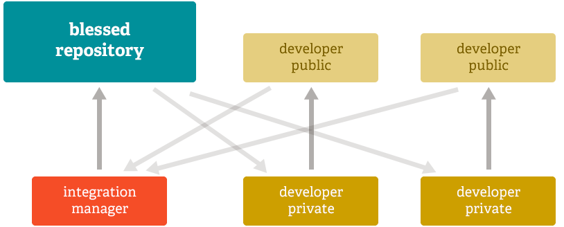

About - Distributed
Distributed
One of the nicest features of any Distributed SCM, Git included, is that it's distributed. This means that instead of doing a "checkout" of the current tip of the source code, you do a "clone" of the entire repository.
Multiple Backups
This means that even if you're using a centralized workflow, every user essentially has a full backup of the main server. Each of these copies could be pushed up to replace the main server in the event of a crash or corruption. In effect, there is no single point of failure with Git unless there is only a single copy of the repository.
Any Workflow
Because of Git's distributed nature and superb branching system, an almost endless number of workflows can be implemented with relative ease.
Subversion-Style Workflow
A centralized workflow is very common, especially from people transitioning from a centralized system. Git will not allow you to push if someone has pushed since the last time you fetched, so a centralized model where all developers push to the same server works just fine.

Integration Manager Workflow
Another common Git workflow involves an integration manager — a single person who commits to the 'blessed' repository. A number of developers then clone from that repository, push to their own independent repositories, and ask the integrator to pull in their changes. This is the type of development model often seen with open source or GitHub repositories.

Dictator and Lieutenants Workflow
For more massive projects, a development workflow like that of the Linux kernel is often effective. In this model, some people ('lieutenants') are in charge of a specific subsystem of the project and they merge in all changes related to that subsystem. Another integrator (the 'dictator') can pull changes from only his/her lieutenants and then push to the 'blessed' repository that everyone then clones from again.